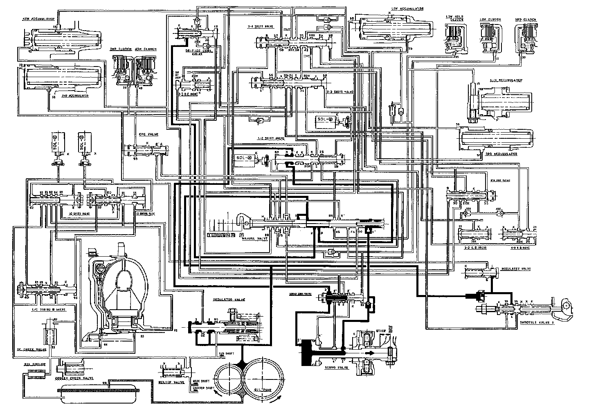

[D] Position

[D] Position
The flow of fluid through the torque converter circuit is the same as in ~ position. The line pressure (1) becomes line pressure (3) as it passes through the manual valve. Then line pressure (3) flows through the 1-2 shift valve to the servo valve via the servo control valve, causing the shift fork shaft to be moved to the reverse position as in [~] position. However, the hydraulic pressure is not supplied to the clutches. Power is not transmitted.
NOTE:
- When used, "left" or "right" indicates direction on the flowchart.
- SOL - (A): Shift Control Solenoid Valve A
- SOL - (B): Shift Control Solenoid Valve B
- SOL - (C): Lock-up Control Solenoid Valve A
- SOL - (D): Lock-up Control Solenoid Valve B